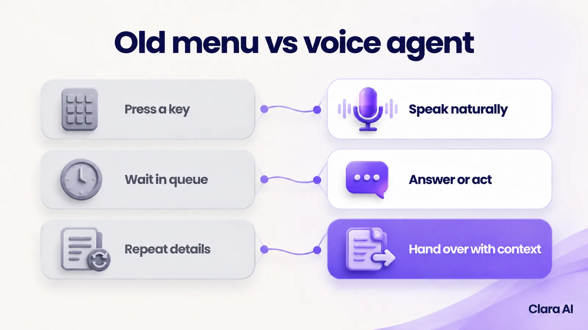
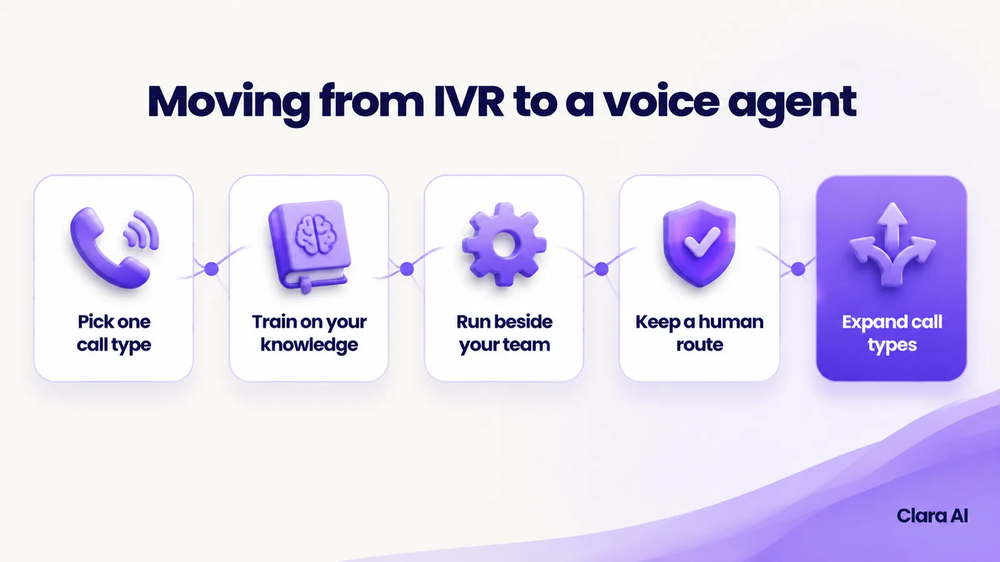

An IVR is a phone menu that routes callers by keypad or fixed voice commands. An AI voice agent understands natural speech, answers from your company's own knowledge, acts in your systems and hands over to a person with full context. For most call centres, the change is fewer transfers, round-the-clock cover and calls an IVR cannot make.
A customer rings her insurer about a late payment. A recorded voice offers five options. She presses two, then three, and reaches a third menu that does not match her question. After a wait in the queue, an agent answers and asks for her policy number, her name and the reason for her call. She has already keyed most of it in. She repeats it, is transferred to another team, and repeats it again.
This guide is for heads of customer service, call-centre managers and operations heads at mid-size European companies whose phone line still runs on a menu like this. It explains what changes with an AI voice agent, where an IVR is still enough, what can go wrong and how to move across without switching everything off at once.
An IVR (interactive voice response) is a phone menu that routes callers by keypad or fixed voice commands. It does not understand a question. It matches a key press or a set word to a path and sends the caller down it.
An AI voice agent is software that understands natural speech, answers questions from the company's own knowledge, takes actions in its systems, such as booking, rescheduling, checking status or qualifying a lead, and hands over to a person with full context.
The first routes. The second listens, answers and acts. If you want the basics first, read what an AI calling agent is and how it works.

Callers also need to know what they are talking to. The agent says at the start that it is an automated assistant, and a route to a person is always available.
Your people spend less time on the same routine questions and more time on calls that need judgement.
None of this removes the need for people. It changes which calls they take.
An IVR moves callers along fixed paths, while an AI voice agent holds a conversation and takes action. The table sets them side by side.
| IVR | AI voice agent | |
|---|---|---|
| How callers speak | Press keys or say fixed words | Speak naturally |
| What it can answer | Only what a recorded menu or fixed prompt covers | Questions covered by your approved knowledge, in plain speech |
| Actions it can take | Routes the call; simple look-ups at most | Books, reschedules, checks status, qualifies and updates the CRM through connected systems |
| Outbound calls | Not usually | Yes: reminders, follow-ups and feedback calls to people who have consented |
| After-hours cover | A menu or voicemail | A full conversation and action |
| Handover to a person | Transfer, often without context | Transfer or booked callback, with transcript and summary |
| Languages | A separate menu for each language | Clara AI's calling agents work in English and Hindi |
| Setup and changes | Fixed menu; changes mean re-recording and re-routing | Built on your knowledge and rules; changes are updates to those |
| What managers can see | Call counts, menu paths and queue times | Counts, plus transcripts, summaries and reasons for calling |
An IVR is still a fair choice in two cases.
An IVR can also stay as a fallback. Some companies keep a short menu for callers who prefer keys, with the voice agent as the front door. The question is not whether an IVR is bad. It is whether your callers' questions fit in a menu.
Every risk with an AI voice agent can be planned for before launch, as long as you test on your own calls.
The agent handles routine calls. People handle the rest:
Your team also reads the call summaries. Where the agent struggled, the script or the source knowledge is corrected.
Consent and data-protection rules apply to AI calls, including the GDPR and the EU AI Act's transparency rule, which says people must be told when they are talking to an AI system and applies from August 2026. Clara AI builds within them. This is not legal advice, so check your own plans with your legal adviser.
Yes. Every call can be transcribed and summarised into an operations intelligence dashboard. Managers see the top reasons for calling, the questions the agent could not answer, how many calls were handed over and how much demand arrives after hours.
An IVR report shows which menu keys people pressed, which is only a guess at why they called. A summary shows the reason in the caller's own words, so you can fix the cause, such as a confusing invoice, and not only staff for the symptom.
The same approved knowledge can also power an AI web chatbot, so a customer who types and a customer who calls get the same answer.
Do not switch the menu off on day one. A staged plan keeps the risk low.

Clara AI has built calling agents for Vijay Sales, an electronics retail chain; IDBI Bank, for high-volume banking outreach calls; and Aditya Birla Insurance Brokers, for multilingual policy and lead follow-up calls. These clients are in India, and Clara AI is now working with companies in Europe. We publish no results here, and your own build depends on your calls, systems and rules. See our client work.
Clara AI builds, deploys and manages AI calling agents in six steps. Clara AI's calling agents and chatbots work in English and Hindi.